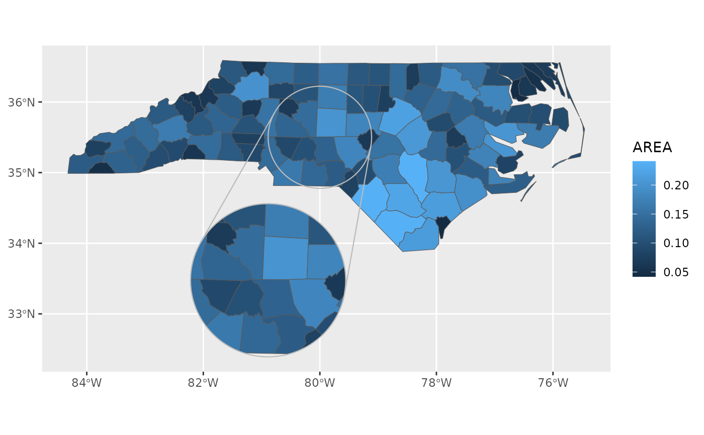

This is a wrapper around ggplot2::geom_sf() that assists with creating map
insets.
Usage
geom_sf_inset(
mapping = ggplot2::aes(),
data = NULL,
stat = "sf",
position = "identity",
...,
inset = NULL,
inset_copy = TRUE,
inset_clip = FALSE,
na.rm = TRUE,
show.legend = NA,
inherit.aes = TRUE
)Arguments
- mapping, data, stat, position, na.rm, show.legend, inherit.aes, ...
- inset
Inset configuration; see
configure_inset().- inset_copy
Draw both the base layers and the inset layers using the same configuration. Only relevant when
insetis specified.- inset_clip
When an inset is drawn, place included points only in the inset.
Value
A ggplot layer similar to ggplot2::geom_sf() but transformed according to the
inset configuration.
Details
First, configure an inset using configure_inset(), then pass the
configuration object to each applicable layer using the inset
parameter.
After specifying all your usual geoms, use geom_inset_frame() to add a frame
around the inset that connects it to the main map.
Internally this works by inserting duplicates of the geom_sf() layers
where the duplicates have been transformed and cropped to fit into the inset.
The way that this copying works can be controlled with the inset_copy
parameter if for example you'd like a different aesthetic mapping for the
copy that goes in the inset. The default copies the layers:
geom_sf_inset(aes(...), inset = inset_cfg, ...)but this version specifies them separately:
# aesthetics for main map only:
geom_sf(aes(...), ...)
# aesthetics for inset map only:
geom_sf_inset(aes(...), inset = inset_cfg, inset_copy = FALSE, ...)Examples
library(sf)
library(ggplot2)
nc <- sf::st_read(system.file("shape/nc.shp", package = "sf"), quiet = TRUE)
cfg <- configure_inset(
centre = st_sfc(st_point(c(-82, 35)), crs = 4326),
scale = 2,
translation = c(10, -60),
radius = 50,
units = "mi")
ggplot(nc) + geom_sf_inset(aes(fill = AREA), inset = cfg) + coord_sf()
